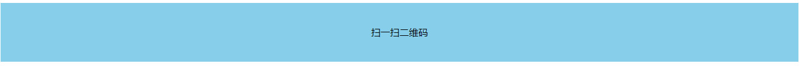
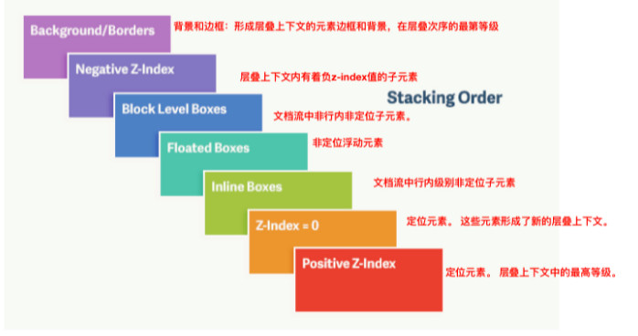
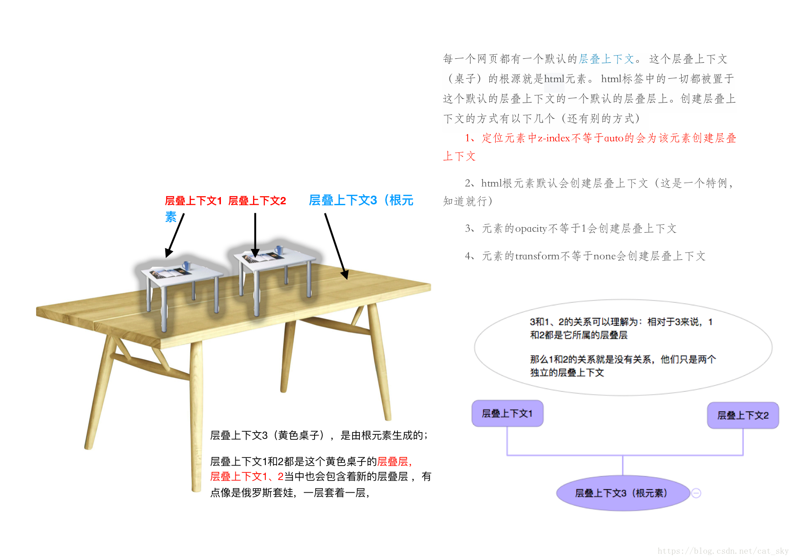

定位
在CSS中，定位机制一共有三种：normal flow（普通流），float（浮动）和 absolute positioning（绝对定位）。而普通流的定位又分为三种:block formatting（块级格式化）， inline formatting（行内格式化）及 relative positioning（相对定位）。
浮动， 关键在一个 “浮” 字上面， 那么 我们的定位，关键在于一个 “位” 上。浮动让多个块级元素在一行显示，定位就是任意移动盒子位置。
absolute属性的出现本来是想把页面搞得像photoshop那样，一个图层一个图层覆盖似的。
固定定位是特殊的绝对定位，以下规则对固定定位同样适用。
浮动和绝对定位都具有包裹性（inline-block化）
浮动与绝对定位的差异：同处于文档流中的文字实体不会与浮动元素重叠，而会与绝对定位元素重叠。
内容一般指文本或子元素。
块级元素在position(relative/static)的情况下width为100%！

但是块级元素设置position（absolute/fixed） 之后，会将width变成auto（会受到父元素的宽度影响）！当父级元素position设置为absolute后，宽度以子元素内容的宽度一致。

1、包裹性（block化）：元素绝对定位后，会为其后代元素建立一个包含块。若绝对定位元素不设置宽度，宽度由内容撑开（即width变成auto）！元素没有内容（没有子元素、文本，或者只有空的子元素）并且设置绝对定位、固定定位、浮动时，width:auto等同于width:0！所以当子元素没有设置内容宽高撑开时，设置绝对定位或浮动的父元素要加宽高！否则看不见！
position:static;或position: relative；时

position: absolute;或position: fixed；时

2、破坏性
元素绝对定位后，会脱离文档流，若父级为块级元素时不设置高度，则父级高度塌陷；若父级为行内元素时，无其他内容，则父级宽度也将塌陷！！！


3、为什么用绝对定位后再用margin: 0 auto;就无效了？
绝对定位之后元素脱离文档流, 没有了可以参照的父元素,因此无法实现 auto 的定位。所以绝对定位和浮动元素用margin: 0 auto;无效！
另外，body宽度是固定的（电脑分辨率的宽度），高度是auto.
4、元素同时应用了position: relative、float、（top / left / bottom / right）属性后，则元素先浮动到相应的位置，然后再根据（top / left / bottom / right）所设置的距离来发生偏移。
5、（如果两个元素所处的位置相同）第一个元素应用了position之后会覆盖着接下来的float元素。
6、 同时应用position: absolute及float属性，则float属性失效！
PS: 定位是我们CSS算是数一数二的难点了，但是，你务必要学好它，我们CSS离不开定位，特别是后面的js特效，天天和定位打交道。不要抵触它，反而要爱上它，它可以让我们工作更加轻松哦！
7、指定了 position:fixed 的元素，如果其祖先元素存在非 none 的 transform 值 ，那么该元素将相对于设定了 transform 的祖先元素进行定位。
为什么要用定位？
那么定位，最常用的场景在哪呢？ 来看几幅图片，你一定会有感悟！
第一幅图， 小黄色块可以在图片上移动：

第二幅图， 左右箭头压住图片：

第三幅图, hot 在盒子外面多出一块，更加突出：

第四幅图，上下滚动时顶栏和侧边栏固定不动：

元素的定位属性主要包括定位模式和边偏移两部分。
1、边偏移
边偏移属性 | 描述 |
top | |
顶端偏移量 | 定义元素相对于其父元素上边线的距离 |
bottom | |
底部偏移量 | 定义元素相对于其父元素下边线的距离 |
left | |
左侧偏移量 | 定义元素相对于其父元素左边线的距离 |
right | |
右侧偏移量 | 定义元素相对于其父元素右边线的距离 |

2、定位模式（定位的分类）

● 静态定位 默认定位，边偏移无效，一般用来清除定位。
● 绝对定位脱标，不占用位置！


1、父元素有定位，相对于上一个已经定位（除了静态定位的所有定位）的父元素（祖先）进行定位！

2、所有父元素都没有定位，相对于<body>定位！

3、绝对定位的盒子没有边偏移，以标准流来显示排序，不占用位置！

● 相对定位不脱标，占用位置！相对于自己的左上角为基点来移动位置！

● 固定定位是特殊的绝对定位。固定定位脱标，不占用位置。固定定位与绝对定位的区别：固定定位相对于视口定位，不受制于父元素!不随着滚动条滚动！ IE6以下不支持固定定位，IE7有许多bug。
----------------------------------------------------------------------------------------------------------------------------------------------------------
子绝父相
子盒子是绝对定位，父盒子只要是定位即可（不管父盒子是绝对定位还是相对定位，甚至是固定定位都可以），就是说， 子绝父绝，子绝父相都是正确的。但是，在网页布局的时候最常用的是子绝父相。
子绝父相的由来
原因：绝对定位脱标，不占用位置！相对定位不脱标，占用位置！
1、如果子盒子是相对定位，占用位置，其他盒子会按普通流方式掉下来。

所以子盒子是绝对定位，不占用位置， 可以放到父盒子里面的任何一个地方。
2、如果父盒子是绝对定位，不占用位置，下一个元素的盒子会补上它的位置。


所以需要占用位置，父盒子就只能是相对定位。


图片、箭头按钮、下面的点都是<div>（<div>与图片宽高相等）里面的兄弟元素，会用到绝对定位。
还有下面的图都会用到绝对定位，都会盖住下面的盒子。


------------------------------------------------------------------------------------------------------------------------------------------------------------
绝对定位的水平垂直居中
普通盒子的左右margin为auto对绝对定位无效。
定位的盒子水平/垂直居中，有一个算法：
1、首先left: 50%;或top: 50%; 父盒子宽度/高度的一半大小
2、然后使用负外边距走自己宽度/高度的一半

水平居中


垂直居中


------------------------------------------------------------------------------------------------------------------------------------------------------------
淘宝轮播图练习问题总结
1、忘记*{ margin: 0; padding: 0; }
2、忘记给图片<a>,也忘记给<a>。
3、不知道li需要内容或宽高才能看到，水平外边距不会合并。
4、最后注意规则的权重问题，可能导致颜色无法应用。
5、CSS调试中有警告标志表示拼写错误，划线代表因为层叠被覆盖。
------------------------------------------------------------------------------------------------------------------------------------------------------------
新浪固定定位练习问题总结
1、background与background-image混淆。
2、标点符号。
叠放顺序（z-index）
网页也有一个z轴：一条从屏幕表面到你的脸（或者在屏幕前面你喜欢的任何其他东西）的虚线。z-index 值影响定位元素位于该轴上的位置。

在CSS中，要想调整重叠定位元素的堆叠顺序，可以对定位元素应用z-index层叠等级属性，其取值可为正整数、负整数和 0 。
正整数将它们移动到堆栈上方，负整数将它们向下移动到堆栈下方。
默认情况下，定位的元素都具有 z-index 为 auto，实际上为 0。
比如： z-index: 2;
注意：
z-index的属性值可以是正整数，也可以是负整数
1. z-index的默认属性值是 0，取值越大，定位元素在层叠元素中越居上。
2. 如果取值相同，则根据书写顺序，后来居上。
3. 后面数字一定不能加单位。
4. 只有相对定位，绝对定位，固定定位、flex 孩子元素有此属性，其余标准流，浮动，静态定位都无此属性，亦不可指定此属性（没有效果）。
扩展：
z-index 实际上只是CSS层叠上下文和层叠顺序中的一叶小舟。
概念
层叠上下文（stacking context）：是 HTML 中的一个三维的概念，如果一个元素含有层叠上下文，我们可以理解成这个元素在 z 轴上高人一等。
可以把层叠上下文理解成一种“层叠结界”，一个小世界。
这个小世界可能有其他的“层叠结界”，而自身也可能处于其他的“层叠结界”中。

层叠上下文（某个普通元素当了官，成为层叠上下文元素）
「层叠上下文」可理解为当官：网页中有很多很多的元素，我们可以看成是真实世界的芸芸众生。
真实世界里，我们大多数人是普通老百姓们，还有一部分人是做官的官员。
“官员”就可以理解为网页中的层叠上下文元素（当了官的普通元素，普通元素的主子），“用户”可以理解为皇帝。
一旦当了官，相比普通老百姓而言，离皇帝更近了，就等同于网页中元素级别更高，离我们用户更近了。
层叠上下文元素的层叠水平可以理解为官员的职级，1品2品，县长省长之类。
对于普通元素的层叠水平，我们的探讨仅仅局限在当前层叠上下文元素中，
因为 A 官员家里的管家和 B 官员家里的管家做PK实际上是没有意义的，他们牛不牛逼完全由他们的主子决定。
层叠上下文元素的特性：
层叠上下文的层叠水平要比普通元素高；
层叠上下文可以嵌套，内部层叠上下文及其所有子元素均受制于外部的层叠上下文。
每个层叠上下文和兄弟元素独立，也就是当进行层叠变化或渲染的时候，只需要考虑后代元素。
每个层叠上下文是自成体系的，当元素发生层叠的时候，整个元素被认为是在父层叠上下文的层叠顺序中。
层叠上下文的创建：
和块级格式化上下文一样，层叠上下文也基本上由一些特定的 CSS 属性创建
1. 天生派：页面根元素 <html> 天生具有层叠上下文，称之为“根层叠上下文”。
2. 正统派：z-index 值为数值的定位元素的传统层叠上下文。
3. 扩招派：其他CSS3属性。
1. 根层叠上下文
指的是页面根元素，也就是滚动条的默认的始作俑者<html>元素，所有的元素一定处于至少一个层叠上下文中。
这就是为什么绝对定位元素在 left/top 等值定位的时候，如果没有其他定位元素限制，会相对浏览器窗口定位的原因。
例子
有两个div，p.a、p.b被包裹在一个div里，p.c被包裹在另一个盒子里，只为.a、.b、.c设置 position 和 z-index 属性
<style>
div {
position: relative;
width: 100px;
height: 100px;
}
p {
position: absolute;
font-size: 20px;
width: 100px;
height: 100px;
}
.a {
background-color: blue;
z-index: 1;
}
.b {
background-color: green;
z-index: 2;
top: 20px;
left: 20px;
}
.c {
background-color: red;
z-index: 3;
top: -20px;
left: 40px;
}
</style>
<body>
<div>
<p class="a">a</p>
<p class="b">b</p>
</div>
<div>
<p class="c">c</p>
</div>
</body>
效果：

因为 p.a、p.b、p.c 三个的父元素 div 都没有设置 z-index，所以不会产生层叠上下文，
所以 .a、.b、.c 都处于由 <html></html> 标签产生的“根层叠上下文”中，属于同一个层叠上下文，此时谁的 z-index 值大，谁在上面。
2. 定位元素与传统层叠上下文
对于 position 值为 relative/absolute 的定位元素，
以及 FireFox/IE浏览器 （不包括 Chrome 等 webkit 内核浏览器）下含有 position:fixed 声明的定位元素，
当其 z-index 值不是 auto 的时候，会创建层叠上下文。
大家知道为什么定位元素会层叠在普通元素的上面吗？

其根本原因就在于，元素一旦成为定位元素，其 z-index 就会自动生效，此时其 z-index 就是默认的 auto，也就是 0 级别，
根据上面的层叠顺序表，就会覆盖 inline 或 block 或 float 元素。
而不支持 z-index 的层叠上下文元素默认 z-index:auto 级别，
也就是说，层叠上下文元素和定位元素是一个层叠顺序的，于是当他们发生层叠的时候，遵循的是“后来居上”准则
例子 1
有两个 div，p.a、p.b 被包裹在一个 div 里，p.c 被包裹在另一个盒子里，同时为两个 div 和 .a、.b、.c 设置 position 和 z-index 属性
<style>
div {
width: 100px;
height: 100px;
position: relative;
}
.box1 {
z-index: 2;
}
.box2 {
z-index: 1;
}
p {
position: absolute;
font-size: 20px;
width: 100px;
height: 100px;
}
.a {
background-color: blue;
z-index: 100;
}
.b {
background-color: green;
top: 20px;
left: 20px;
z-index: 200;
}
.c {
background-color: red;
top: -20px;
left: 40px;
z-index: 9999;
}
</style>
<body>
<div class="box1">
<p class="a">a</p>
<p class="b">b</p>
</div>
<div class="box2">
<p class="c">c</p>
</div>
</body>
效果：

我们发现，虽然 p.c 元素的 z-index 值为 9999，远大于 p.a 和 p.b 的 z-index 值，
但是由于 p.a、p.b 的父元素 div.box1 产生的层叠上下文的 z-index 的值为 2，p.c 的父元素 div.box2 所产生的层叠上下文的 z-index 值为 1，
所以 p.c 永远在 p.a 和 p.b 下面。
同时，如果我们只更改 p.a 和 p.b 的 z-index 值，由于这两个元素都在父元素 div.box1 产生的层叠上下文中，所以，谁的 z-index 值大，谁在上面。
例子 2
<style>
.box1, .box2 {
position: relative;
z-index: auto;
}
.child1 {
width: 200px;
height: 100px;
background: #168bf5; /* 蓝色 */
position: absolute;
top: 0;
left: 0;
z-index: 2;
}
.child2 {
width: 100px;
height: 200px;
background: #32c292; /* 绿色 */
position: absolute;
top: 0;
left: 0;
z-index: 1;
}
</style>
</head>
<body>
<div class="box1">
<div class="child1"></div>
</div>
<div class="box2">
<div class="child2"></div>
</div>
</body>
效果：

.box1/.box2 虽然设置了 position: relative，但是 z-index: auto 的情况下，这两个 div 还是普通元素，并没有产生层叠上下文。
所以，child1/.child2 属于 <html></html> 元素的“根层叠上下文”中，此时，谁的 z-index 值大，谁在上面。
只把 .box1/.box2 的 z-index 属性值改为数值 0，其余不变。
.box1, .box2 {
position: relative;
z-index: 0;
}
...
<body>
<div class="box1">
<div class="child1"></div>
</div>
<div class="box2">
<div class="child2"></div>
</div>
</body>
仅仅修改了 .box1/.box2 的 z-index 属性值改为数值 0，最终结果完全相反， .child2 覆盖在了 .child1 上面。
原因很简单：因为设置 z-index: 0 后，.box1/.box2 产生了各自的层叠上下文，
这时候要比较 .child1/.child2 的层叠关系完全由父元素 .box1/.box2 的层叠关系决定。
但是 .box1/.box2 的 z-index 值都为0，都是块级元素（所以它们的层叠等级，层叠顺序是相同的），
这种情况下，在 DOM 结构中后面的覆盖前面的，所以 .child2 就在上面。
例子 3
<div style="position:relative; z-index:auto;">
<!-- 美女 -->
<img src="1.jpg" style="position:absolute; z-index:2;">
</div>
<div style="position:relative; z-index:auto;">
<!-- 美景 -->
<img src="2.jpg" style="position:relative; z-index:1;">
</div>
<div style="position:relative; z-index:0;">
<!-- 美女 -->
<img src="1.jpg" style="position:absolute; z-index:2;">
</div>
<div style="position:relative; z-index:0;">
<!-- 美景 -->
<img src="2.jpg" style="position:relative; z-index:1;">
</div>
效果：

为什么小小的改变会产生相反的结果呢？
第一段代码
z-index：auto 所在的<div>元素是一个普通定位元素。
于是，里面的两个 <img> 元素的层叠比较就不受父级的影响，两者直接套用“层叠黄金准则”。
这里，两个 <img> 元素有着明显不一的 z-index 值，因此遵循“谁大谁上”的准则，
于是，z-index 为 2 的那个“美女”就显示在 z-index 为 1 的“美景”上面了。
第二段代码
而 z-index 一旦变成数值，哪怕是 0，就会创建一个层叠上下文。
此时，层叠规则就发生了变化。
层叠上下文的特性里面最后一条是自成体系。
两个 <img> 元素的层叠顺序比较变成了优先比较其父级层叠上下文元素的层叠顺序。
由于外面的两个<div>元素都是 z-index：0，两者层叠顺序一样大，此时遵循“层叠黄金准则”的另外一个准则“后来居上”，
根据在 DOM 文档流中的位置决定谁在上面，于是，位于后面的“美景”就自然而然显示在“美女”上面了。
对，没错，<img>元素上的 z-index 没起作用！
有时候，我们在网页重构的时候会发现z-index嵌套错乱，这时要看看是不是受父级的层叠上下文元素干扰了，可能就豁然开朗了。
元素层叠时，覆盖关系准则
同父同级元素
● 当具有明显的层叠水平标示时，如识别的 z-index 值
● z-index 大的覆盖小的，数值越大，越靠近视觉点。
● z-index 相同时，在 DOM 流中处于后面会覆盖前面。
● 都没有设置 z-index 时，使用默认值，一个定位一个没有定位，那么定位覆盖未定位元素。
● 都没有定位且发生位置重合现象时，在 DOM 流中处于后面会覆盖前面。
父子层级元素
● 不同父元素，只要父元素越大，那么整体就越靠近视觉点，而不管其子元素大小情况。
● 如果父元素 z-index 有效，那么子元素无论是否设置 z-index 都和父元素一致，会在父元素上方；
● 如果父元素 z-index 失效（未定位或者使用默认值），那么定位子元素的 z-index 设置生效。
问题1：使用 z-index 有什么需要注意的地方？
1、在开发中尽量避免层叠上下文的多层嵌套，因为层叠上下文嵌套过多的话容易产生混乱，如果对层叠上下文理解不够的话是不好把控的。
2、非浮层元素（对话框等）尽量不要用 z-index（通过层叠顺序或者dom顺序或者通过层叠上下文进行处理）
3、z-index 设置数值时尽量用个位数
4、让 absolute 元素覆盖正常文档流内元素（不用设z-index，自然覆盖）
5、让后一个 absolute 元素覆盖前一个 absolute 元素（不用设 z-index，只要在HTML端正确设置元素顺序即可）
问题2：什么情况下使用 z-index？
1、当 absolute 元素覆盖另一个 absolute 元素，且 HTML 不方便调整 DOM 的先后顺序时，需要设置 z-index: 1。
2、非常少见的情况下多个 absolute 交错覆盖，或者需要显示最高层次的模态对话框时，可以设置 z-index > 1。
3. CSS3与新时代层叠上下文
CSS3 中出现了很多新属性，其中一些属性对层叠上下文也产生了很大的影响。如下：
1. 父元素的 display 属性值为 flex|inline-flex，子元素 z-index 属性值不为 auto 的时候，子元素为层叠上下文元素；
2. 元素的 opacity 属性值不是 1；
3. 元素的 transform 属性值不是 none；
4. 元素 mix-blend-mode 属性值不是 normal；
5. 元素的 filter 属性值不是 none；
6. 元素的 isolation 属性值是 isolate；
7. will-change 指定的属性值为上面任意一个；
8. 元素的 -webkit-overflow-scrolling 属性值设置为 touch。
CSS3中，元素属性满足以上条件之一，就会产生层叠上下文。
display:flex|inline-flex与层叠上下文
注意，这里的规则有些复杂。
要满足两个条件才能形成层叠上下文：
条件 1 是：父级需要是 display:flex 或者 display:inline-flex 水平，
条件 2 是：子元素的 z-index 不是 auto，必须是数值。此时，这个子元素为层叠上下文元素，没错，注意了，是子元素，不是 flex 父级元素。
例子
<div class="box">
<div>
<img src="mm1.jpg">
</div>
</div>
.box { display: flex; }
.box > div { background-color: blue; z-index: 1; } /* 此时该 div 是层叠上下文元素，同时 z-index 生效 */
.box > div > img {
position: relative; z-index: -1; right: -150px; /* 注意这里是负值 z-index */
}


在 CSS2.1 时代，z-index 属性必须和定位元素一起使用才有作用，但是，在 CSS3 的世界里，非定位元素也能和 z-index 愉快地搞基。
概念
层叠水平（stacking level 层叠上下文元素和普通元素的层叠等级 ）：
决定同一个层叠上下文中元素在 z 轴上的显示顺序。
所有的元素都有层叠水平，包括层叠上下文元素，也包括普通元素，然而所有普通元素的层叠水平只局限在当前层叠上下文中。
翻译成术语就是：普通元素的层叠水平优先由层叠上下文元素决定，因此，层叠水平的比较只有在当前层叠上下文元素中才有意义。
省级领导的秘书与县级领导的秘书比较，肯定是省级领导的秘书等级高，一目了然没有意义。
只有省级领导的秘书与省级领导的保姆比较，才有意义。
也就是说：
当一个 div 的 z-index为整数时，它的子元素和外界元素进行比较时，采用父元素的 z-index 进行比较,，和兄弟元素比较则采用自身的 z-index 。
当一个 div 的 z-index 为 auto 时，如果它和它的兄弟进行比较，采用它父元素的 z-index 。
千万不要把层叠水平和CSS的 z-index 属性混为一谈，因为层叠水平在所有的元素上都存在。
某些情况下 z-index 确实可以影响层叠水平，但是，只限于定位元素以及 flex 盒子的孩子元素。
规则
层叠顺序(stacking order) 表示元素发生层叠时按照特定的顺序规则在 Z 轴上垂直显示。
由此可见，前面所说的“层叠上下文”和“层叠等级”是一种概念，而这里的“层叠顺序”是一种规则。
层叠顺序
每一个层叠顺序规则适用于当前层叠上下文元素
（1）位于最下面的 border/background 指的是层叠上下文元素的边框和背景色。
（2）inline 水平盒子指的是包括 inline/inline-block/inline-table 元素的“层叠顺序”，它们都是同等级别的。
层叠顺序要高于block(块级)/float(浮动)元素。
（3）单纯从层叠水平来看的话，实际上 z-index: 0 和 z-index: auto 是一样的


从最低到最高排列，依次是：
1. 背景和边框 ：形成层叠上下文的元素的背景和边框，它是整个上下文中层叠等级最低的。
2. z-index 为负数 ：设置了 z-index 为负数的子元素以及由它所产生的层叠上下文.
3. 块级盒模型：位于正常文档流中的、块级的、非定位的子元素.
4. 浮动盒模型 ：浮动的、非定位的子元素。
5. 内联盒模型 ：位于正常文档流中的、内联的、非定位的子元素。
6. z-index 为 0：设置了 z-index 为 0 的、定位的子元素以及由它所产生的层叠上下文。
7. z-index 为正数 ：设置了 z-index 为正数的、定位的子元素以及由它所产生的层叠上下文，它是整个上下文中层叠等级最高的。
遇到元素层叠时，清晰地判断出它们谁在上谁在下：
1、先看要比较的两个元素是否处于同一个层叠上下文中：
1.1如果是，谁的层叠等级大，谁在上面（怎么判断层叠等级大小呢？——看“层叠顺序”图）。
1.2如果两个元素不在统一层叠上下文中，请先比较他们所处的层叠上下文的层叠等级。
2、当两个元素层叠等级相同、层叠顺序相同时：
在 DOM 结构中后面的元素层叠等级在前面元素之上。


为什么 inline/inline-block/inline-table 元素的层叠顺序要高于block(块级)/float(浮动)元素？
其实很简单，像border/background属于装饰元素的属性，浮动和块级元素一般用来页面布局，
而网页设计之初最重要的就是文字内容，所以在发生层叠时会优先显示文字内容，保证其不被覆盖。

层叠的黄金准则
1. 谁大谁上：当具有明显的层叠水平标识的时候，如生效的 z-index 值，在同一个层叠上下文领域，层叠水平值大的那一个覆盖小的那一个。
2. 后来居上：当元素的层叠水平一致、层叠顺序相同的时候，在 DOM 流中处于后面的元素会覆盖前面的元素。
元素的隐藏
隐藏元素不是删除元素，隐藏的元素仍在页面中。
display: none; 元素不显示，隐藏元素之后，元素不保留位置，所占位置会被后面元素占据。（直接消失，常用）
visibility: hidden; 元素不可见，隐藏元素之后，继续保留原有位置。（看不见，不常用）
隐藏溢出的子元素
overflow（通常用于父元素中隐藏内容，例如图片）
overflow默认值为visible;
overflow: hidden; 隐藏溢出的内容。如有必要，内容将被裁剪以适合padding box。
overflow: scroll; 始终有水平和垂直的滚动条。如有必要，内容将被裁剪以适合padding box。
overflow: auto; 内容溢出元素盒子高度时才有垂直的滚动条。


背景裁剪
当在盒子上设置背景（background-color 或 background-image）时，背景会延伸到边框的外边沿（即以z轴方向在边框下方延伸）。所以边框（border）样式如果有缝隙会看到元素的背景颜色即背景区为：边框、内容和内边距。
假使你有一个平铺的背景图，你只想要它延伸到内容的边沿会怎么做？，该行为可以通过使用盒子的background-clip属性来调整。
背景裁剪到边框：

背景裁剪到内边距：

背景裁剪到内容：

背景裁剪到文本：

1、绝对定位

视口：通常与浏览器窗口相同，但不包括浏览器的 UI， 菜单栏等。指的就是网页中你看到的部分。其大小约等于浏览器窗口大小减去地址栏、标签页、工具栏的大小。某些地方定义的viewport也刨去滚动条的大小。Viewport 的大小取决于屏幕的大小，无论浏览器是否处于全屏模式，是否被用户缩放了。Viewport 外的区域，可能需要滚动到其所在的区域才会出现在屏幕上。
● 在尺寸较大的设备中，在这些设备上，应用显示区域不一定是全屏的，viewport 是浏览器窗口的大小。
● 在大多数移动设备中，浏览器是全屏的，viewport 是整个屏幕的大小。
<html>元素不包括整个文档的滚动条，但包括<html>元素的边框。
<body>元素不包括整个文档的滚动条，也不包括<html>元素的边框，也不包括<body>的边框和滚动条。

------------------------------------------------------------------------------------------------------------------------------------------------------------
2、相对定位


------------------------------------------------------------------------------------------------------------------------------------------------------------
3、固定定位


----------------------------------------------------------------------------------------------------------------------------------------------------------------------------------
4、position: inherit;


-------------------------------------------------------------------------------------------------------------------------------------------------------------------------------------


---------------------------------------------------------------------------------------------------------------------------------------------------------------------------------------
Z-index


如何布局
常见布局：垂直居中